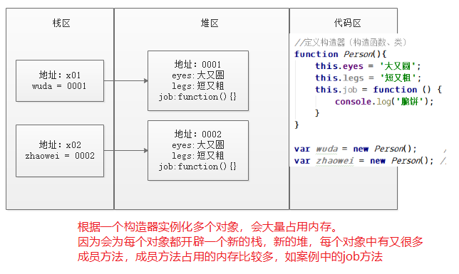
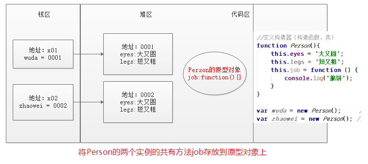
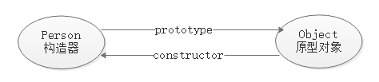
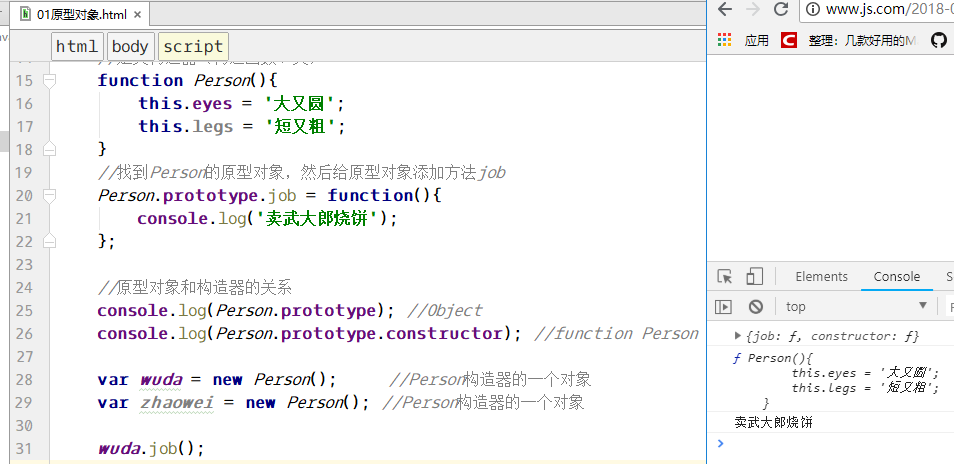
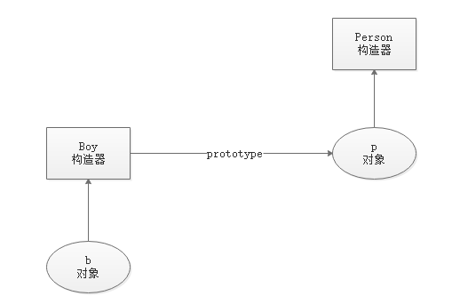
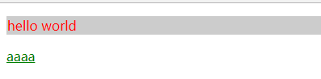
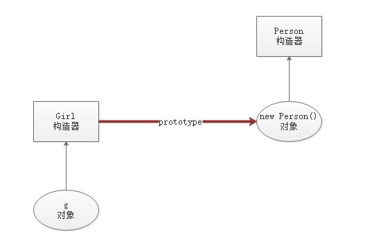
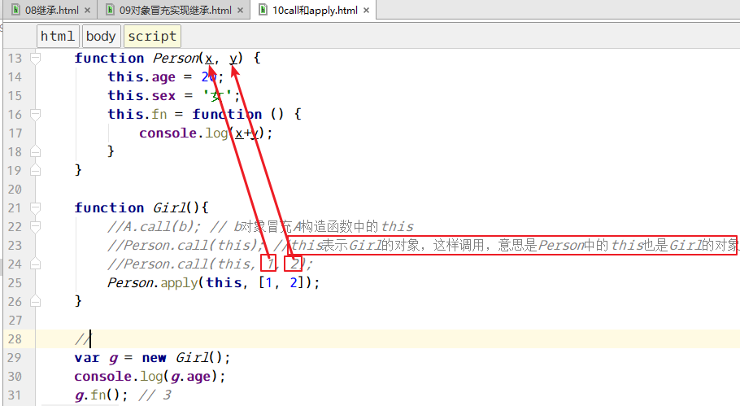
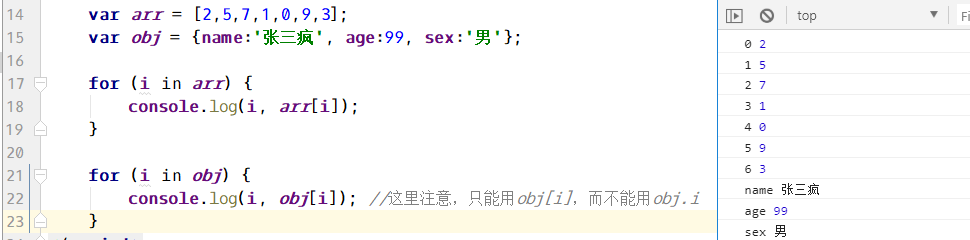

三、==原型和原型链==（重点）
1、原型对象
原型对象，也是一个对象；原型对象用于保存同一个构造器的多个实例的共有方法。
默认的创建对象的内存表示：

如果要解决内存占用过多的问题，则使用原型对象，用==原型对象来保存同一个构造器的多个实例的共有方法==。内存表示如下：

==原型对象和构造器有关系，原型对象是构造器的原型对象==。
- 通过构造器的prototype属性可以找到构造器的原型对象；
- 可以通过constructor属性找到原型对象的构造器；
构造器和原型对象的关系:

1 | //定义构造器（构造函数、类） |

2、原型链
1 | //定义Person构造器 |

在查找一个对象的成员的时候，优先从对象自身查找，如果没有，则从对象的构造函数中查找，如果也没有则从构造函数的原型对象上查找，如果构造器的原型对象也没有，则向构造器的原型对象的构造器中去查找……，这种链式的查找方式就叫做==原型链==。
原型对象上的成员会被构造器的所有实例所拥有（除了覆盖的情况）。
3、扩展内置对象
我们所学的String、Array等对象实际上JavaScript内置了String、Array等构造器。我们所学习的String中的substr等一系列方法都是String构造器的原型对象上的方法。
比如内置的String对象中没有一个首字母大写的方法，我们可以自己添加一个。我们自己添加一个ucfirst方法，也应该添加到String的原型对象上。
1 | //模拟String中的方法是如何实现的 |
4、DOM对象的原型对象
DOM对象是根据document.getElement….得到的对象。
所有的DOM对象的原型对象都是Object对象。
1 | //所有DOM对象的原型对象都是Object |
效果图：

四、定义“类”或对象的多种方式（理解）
w3c手册位置：上面JavaScript –> 左侧的JavaScript –> 到页面最下方点击“马上学习JavaScript高级教程吧” –> 左侧找到定义类或对象。
1、构造方法方式
这是最原始的方式。
1 | /************************** 构造函数方式 ***************************/ |
上面的方式，得到的多个对象，会为每个对象开辟内存。所以占用的内存较多。
解决方式是使用原型对象。
2、原型对象方式
1 | /************************** 原型对象方式 ***************************/ |
上述方式全部使用原型对象方式定义“类”。
对象的多个实例，如果其中一个修改了数组类型的成员之后，另一个对象也会一起改了。
3、混合方式（构造函数+原型对象）
==原则是把对象的所有成员属性都放到构造函数中，把所有的成员方法都放到原型对象上==。
1 | /************************** 混合方式（构造函数+ 原型对象） ***************************/ |
==这种方式，既不会占用大量的内存，也能够将两个对象区分的开。所以这种方式推荐使用==。
4、动态混合方式
有些人认为上面的混合方式，看起来并不像php中的类，而是希望将成员属性和成员方法全部放到一个大括号中，所以出现了下面的动态混合方式。
1 | /************************** 动态混合方式 ***************************/ |
5、实际开发中，到底使用哪种方式定义类或对象
如果根据构造器只实例化一个对象，那么直接使用构造函数方式。
如果根据一个构造器实例化多个对象，那么使用混合方式或者动态原型方式。
如果只是使用一个对象，这个对象用于配置、参数等，那么直接使用直接量语法（{name:’anc’}）最方便。
1 | /********** 下面是函数的参数需要一个对象，则直接使用{}的方式即可 *************/ |
五、私有和封装(了解)
在JavaScript中，没有类，那么只能==模拟私有的成员==。
私有成员有什么特点：不可以在构造函数之外调用。JavaScript在函数内部用var定义的变量，就可以叫做私有成员。
1 | function Person(){ |
六、静态属性和方法（了解）
PHP中调用静态成员的方式是 类名::静态成员
JavaScript中，如果有静态成员，该如何调用呢？ 答： 构造函数.静态成员。
1 | function Person(){ |
七、继承(理解)
1、原型链方式继承
通过指定构造函数的原型对象方式，可以实现继承。
原理图：

1 | //父构造函数 |
2、对象冒充方式继承
1、原始的对象冒充
1 | //父构造函数 |
2、call和apply完成继承（重点）
由于使用对象冒充的开发者比较多，所以在ES3中，js设计者提供了两个方法（call和apply），专门用于对象冒充。
语法：
A.call(); //不给参数，表示使用全局对象window
A.call(b); //b对象冒充A构造函数中的this
A.call(b, 参数1，参数2,…..); // 参数1和2是传递给A函数的
apply和call方法用法基本一致，只是传递参数的时候，后面不是一个个的传递，而是以数组的方式传递的。
和使用call方法不同的是，在给父类(A)传递参数的时候，apply传递一个数组。

apply的其他用法：
找出数组中的最大值：
1 | //找出数组中的最大值 |
3、实际开发中，使用哪种方式实现继承
答案是两者（原型链和冒充）都用，对于成员属性，使用对象冒充的方式，对于成员方法使用原型链的方式。
八、遍历对象 for…in
用来遍历数组和对象，和PHP中的foreach比较像。
1 | //语法 |

用for…in可以遍历数组或对象，也可以用for…in实现继承。
九、顶层函数
w3c手册：上面的JavaScript –> 左侧的JavaScript –> 右侧的参考书 –> 左侧的Functions
顶层函数也就是全局函数，这些函数不属于任何一个对象，在任何位置都可以直接调用。
encodeURI() 把字符串编码为 URI。这个函数不会对“;/?:@&=+$,#”符合进行编码的
decodeURI() 解码某个编码的 URI。
encodeURIComponent() 把字符串编码为 URI 组件。这个函数会对“;/?:@&=+$,#”进行编码
decodeURIComponent() 解码一个编码的 URI 组件。
1 | var url = "http://www.js.com?id=1&name=张三"; |
eval() 计算 JavaScript 字符串，并把它作为脚本代码来执行。
1 | //eval("alert(123);"); |
isNaN() 检查某个值是否是数字。如果是NaN，返回true，否则返回false
parseInt() 解析一个字符串并返回一个整数。
parseFloat() 解析一个字符串并返回一个浮点数。
Number() 把对象的值转换为数字。
String() 把对象的值转换为字符串。